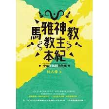
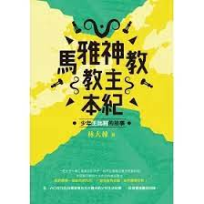

以下是林大棟中醫師的著作，有精彩的小說，也有非常實用的中醫科普書、還有中醫的專著。這個網頁是要和大家分別介紹他幾本重要的著作，如果有意購買，目前在美國國內可以填寫以下的資料，我們查核付費成功後會立刻把書寄過去，而如果住在北加州灣區一帶，也歡迎到林醫師的診所購書。 美國網購地址: https://forms.gle/F6GTcHxLPxa4o8NAA 林醫師目前的重要著作列表如下： 佛州漢唐跟診日誌：師從倪海廈先生見聞錄 藥香中尋找愛(原創小說) 馬雅神教教主本紀：少年王比利的故事(原創小說) 經穴春秋 藥食心源---中醫養生飲食總整理 扶陽之祖_大宋竇材的扁鵲心書 中醫夢紅樓：大觀園女子健康診斷書 中醫超級兒童私房課 AI岐黃——中醫大腦醫案集 AI岐黃——中醫大腦重症醫案集 |